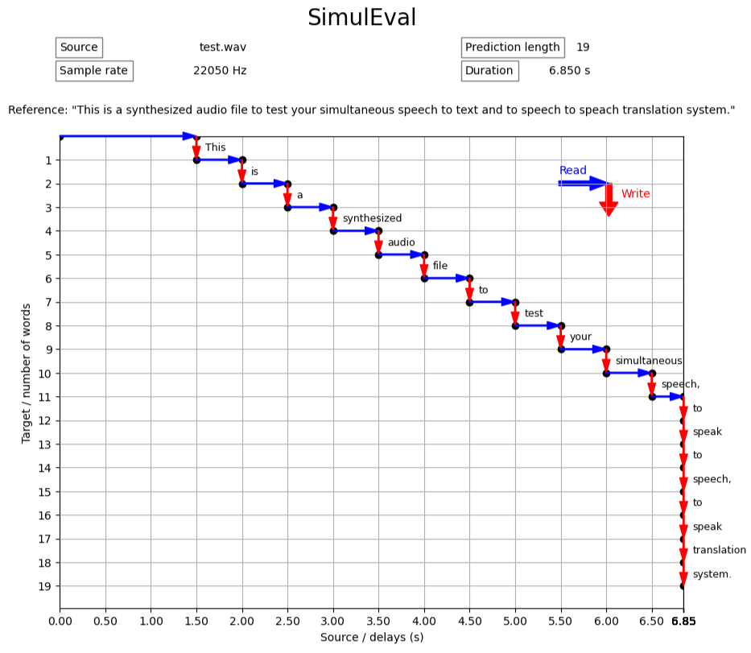
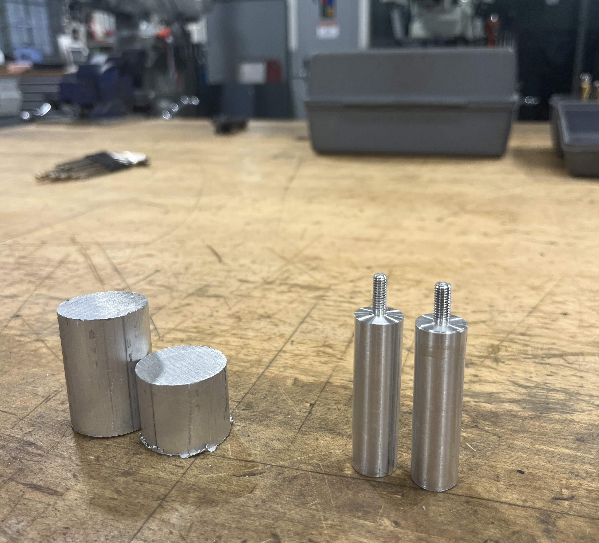
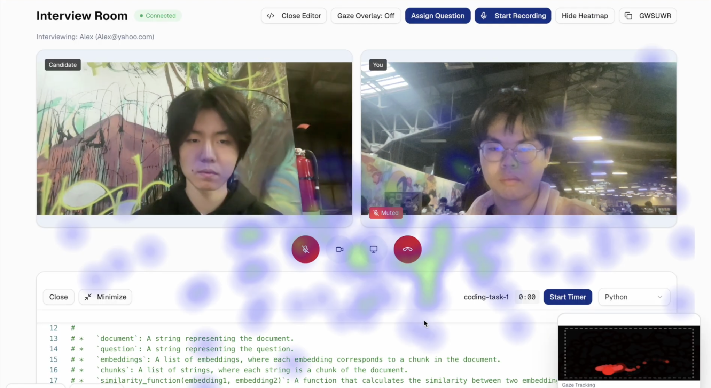
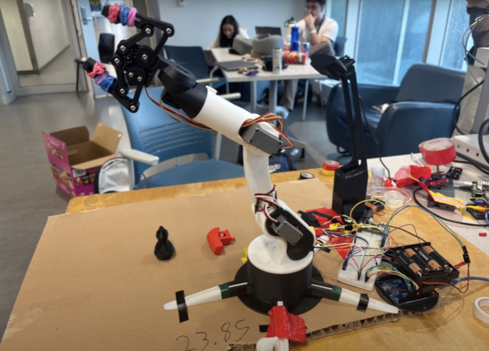
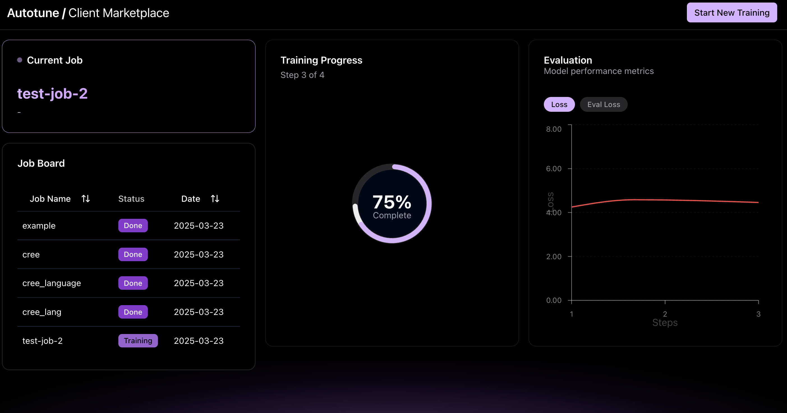
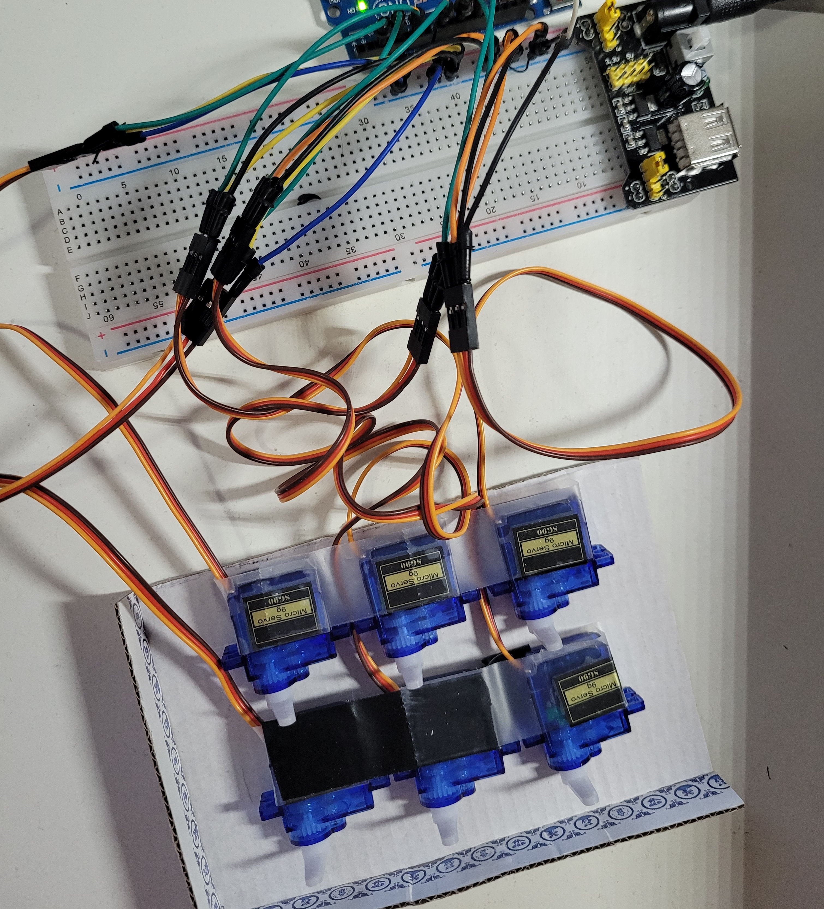
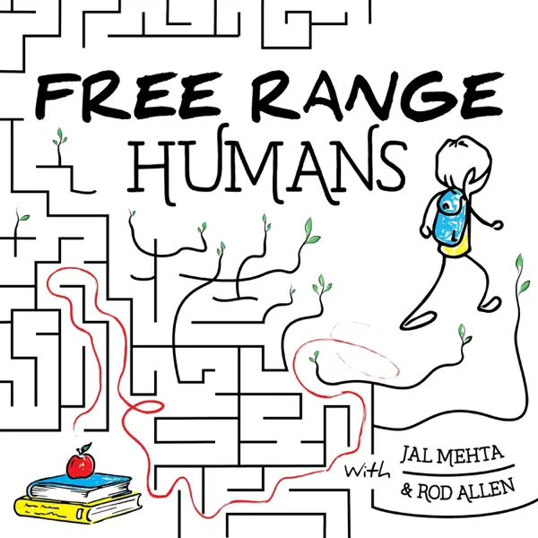
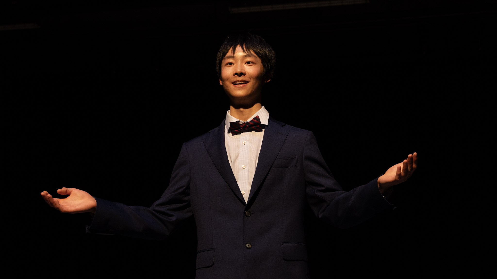

|
Eric Xie
I'm a 2nd year Engineering Science
student at the University of Toronto, majoring in Robotics Engineering. |

|
ResearchI'm interested in robotics, reinforcement learning, and world models. Some below are highlighted for emphasis. |

|
Compliant Koch robot arm using reinforcement learning in Isaac Lab @ Syncere
AI
2025
Motivation: current robotic arms are position controlled, unable to react to external forces while force sensors are expensive. Thus, I trained an end-to-end impedance controller with RL in Isaac Lab. The most difficult challenge was overcoming the sim-to-real gap and deploying on the physical Koch robot. Furthermore, I developed a novel bilateral teleoperation system using servo current readings, boosting data collection by 17%. The teleoperation data was then used to train a diffusion policy to allow for compliant movements during inference. |
|

|
SimulEval @ Facebook AI Research 2024
I developed features for SimulEval - FAIR's open source simultaneous translation evaluation toolkit - using Python. Features include visualization (aiding researchers in interpretting output from the wait-k algorithm), remote translation using Docker, and live transcription demo using Whisper. |
ProjectsI'm always looking to build cool things! My strengths shine through in embedded systems, and my goal is to leverage mechanical, electrical and software engineering skills to improve well-beings of underprivileged communities. Check out Nail Braille and Vita on my involvment in human-centered design. Some projects are highlighted for emphasis. |
|

|
UofT Formula Racing | 2024-2025
In my first year, I designed brake piston components using Solidworks for our 2024 FSAE competition vehicle. In my second year, I joined the Controls team and implemented MPC and pure pursuit controllers. |
|

|
Candidly @ CalHacks 2025
This anti-Cluely web app tracks the candidates' gaze and generates a heat map for the interviewer in real time, ensuring fairness and transparency. Specifically, I worked on the middleware speech to text service with Deepgram, post interview report generation with Gemini and backend Javascript integration. |
|

|
DUM-E @ Hack the North 2025
Our team invented DUM-E from the Iron Man movie - an NLP powered robotic arm that can reason, generalize, and execute tasks such as grasping, waving, and doing pick & place - with just voice, winning Hack the North. This is done by leveraging OpenCV and homography to locate objects, Llama 3.3 for voice recognition, and multimodal Groq VLA for task execution. Specifically, I analytically solved the 5 DOF inverse kinematics for the arm, tuned the servo motors, and deployed on Raspberry Pi with inference time of < 1 ms. |

|
UofT Aerospace Team | 2024-2025
In the 2024 season, the team was tasked to create a VTOL for package delivery. My contribution included creating a simulation of the landing zone with April Tags in Gazebo, simulating the drone's downward-facing camera in rviz, and passing the data to a ROS node for localization. |
|

|
Autotune @ GenAI Genesis Hackathon 2025
We pioneered an LLM marketplace to fine-tune and deploy AI models. Autotune empowers non-technical creators and those with lack of GPU resources to outsource finetunement and streamline the LLM development process, democratizing access to LLM computing. My team produly won Best ML Hacks award. This was built with Python, PyTorch, Docker, HugginFace API, and Google Cloud, and I specifically worked on the Next.js frontend and integration. |

|
MapMatch @ AWS Hack the Student Life 2024
MapMatch is a roommate matching application designed to connect individuals seeking compatible living partners using keyword extraction, vector embeddings, and cosine similarity. I developed the frontend with React and integrated it with the backend and AWS DynamoDB. |

|
Viral Insight @ Buildspace 2024
My friend Jinay Patel and I built a tool for YouTubers to brainstorm catchy titles. We trained an AI regression model from scraped data from YouTube. This way, content creators could compare between potential title names, maximize video performance and attract a wider audience. We got 120+ upvotes on ProductHunt, 500+ page views on Vercel, and our first paying customer ($45 USD) when we officially launched in 2024 Summer. |

|
Vita @ UBC Geering Up 2023
Many Indigenous communities in British Colombia have limited access to clean water due to colonially polluted lakes and rivers. This is why I led my team to develop a low-cost, zero-electricity, and sustainable water-filtration bottle. It's 3D printed with food-grae PETG with a commercial filter. We successful showcased @ UBC Gala with 500+ attendees. |
|

|
Nail Braille @ Shad Western 2022
1 million+ Canadians are visually impaired, but don't know braille, which tremendously hinders their navigation and communication. Knowing this pain first hand from a friend of mine, I led my team to develop a speech to braille learning device for visually impaired individuals. It translates verbal speech with Mozilla DeepSpeech and displays tactile pins on an Arduino board. This braille learning technique is more affordable than tutoring, and more interactive than traditional books and pegs, winning us the Best Prototype award. |

|
VEX & FIRST Robotics @ Ten Ton Robotics 2021 - 2024
Through 3 years of robotics competition, I have designed both hardware mechanisms like chassis, four-bar lift, ratchet etc, and implemented software algorithm like PID, odometry, and pure pursuit controller. I gained mechanical, electrical, and programming experiences, leading my team to 3 World Championships. |
Invited Talks
|
|

|
Harnessing AI in Education @ Free Range Humans 2024
During the podcast episode hosted by Jal Mehta, a professor at the Harvard Graduate school of Education, and joined by two BC high school superintendents, I represented the student body whose education system is becoming more integrated with AI. I presented a student POV in how AI is used, its potential in promoting equity in education, and discussed the nuance of banning AI in school. There is signifcant challenge in building a balance between exploration/experimentation and safety guardrails. As well, we must learn the positive and negative effects of generative AI technologies in the classroom, and to what extent AI helps with critical thinking and cognitive development versus grade-driven answer matching. We ended with a debate over whether these new technologies will really transform education. Overall, I'm very grateful to have represented my peers and discussed the ambiguous relationship between humans and machines in the education sphere. |
|

|
Take the First Step: What I Learned from Talking to 100 Strangers @ TEDx Talk
2024
We oftentimes are too worried about the risks: making a first move on a crush, joining a competition that you don't feel qualified for, networking with people that judge you constantly. Yet, taking the first step is crucial to self-improvement, and with it comes the ups and downs that make life meaningful. With my talk, I encourage everyone to take action and make that first step that we are now empowered to do. |
|
2025, Made with <3 and banana+strawberry smoothie
|